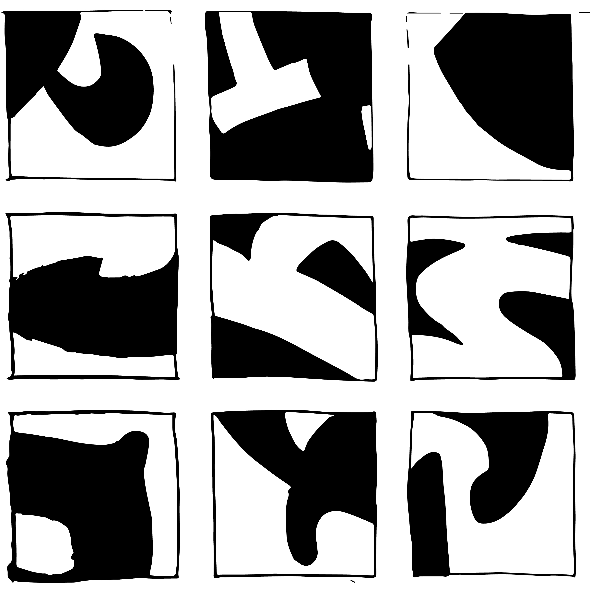
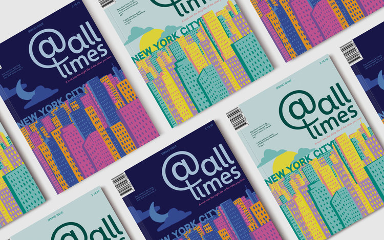
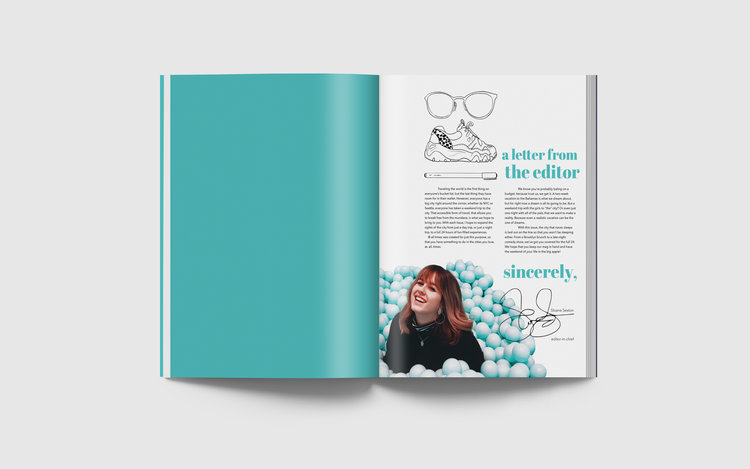
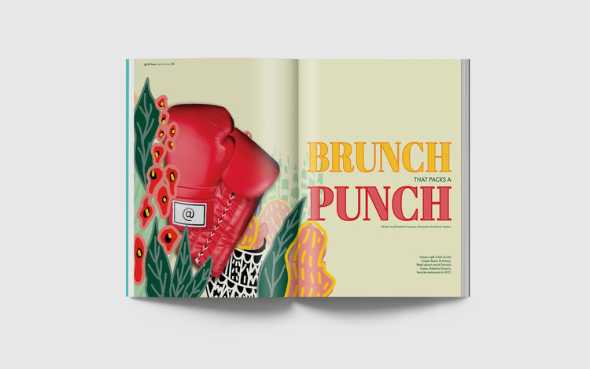
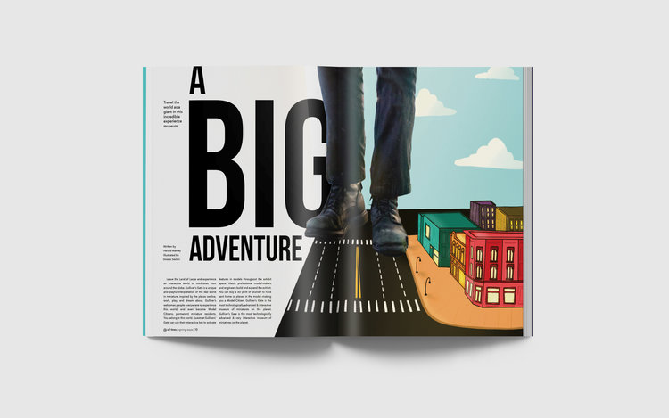
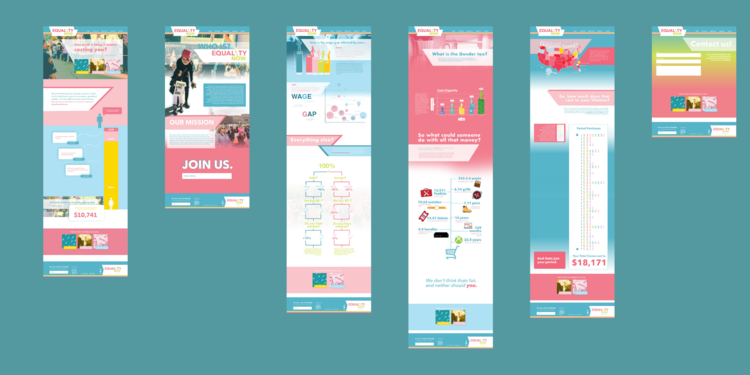
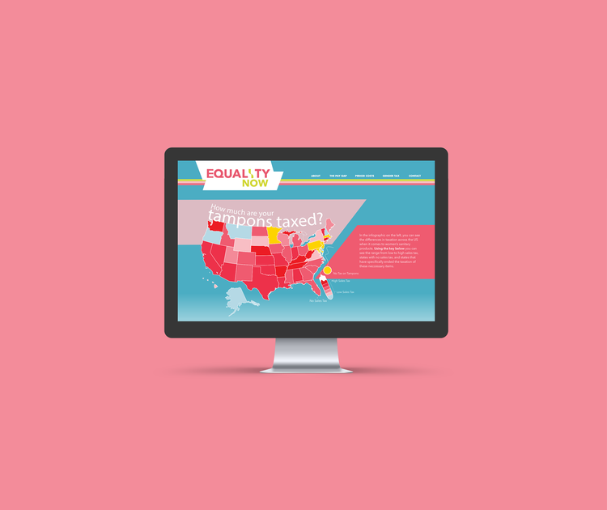
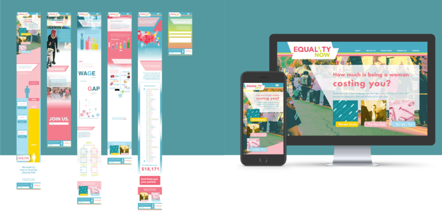

Comunications Design
In this bachelor of fine arts (B.F.A.) degree program, design classes are modeled on professional practice. We develop your ability to solve real-world problems along with a variety of skills in graphic media. Our coursework explores the creative process, communications theory, design history, and project management, in addition to illustration, photography, typography, and production processes.
@ All Times
The idea for this double headed magazine was created through multiple mind-maps and trips to barnes and nobles. Eventually, I finalized At all times, a travel magazine with the day & night life of cities around the world. I also wanted to use this as an opportunity to showcase my illustration skills, so all of the illustrations you can see in this magazine were done by yours truly!




Equality Now
The Process of the Equality Now website started with style exploration, infographic creation, and finally web design. I focused on user experience and simplifying complex information to be understood by a specified audience. After solidifying my message and audience, I was able to distinguish what information I wanted to visually represent. Using one of six different types of graphs, I outlined what I wanted to create and started iterations. Here, you can see six of the infographics that help to display different costs of being a woman, including the wage gap, gender taxed items, and period costs. Using a 1140 px grid fit to a 1280px monitor, I laid out web pages to present my infographics in an interesting way, modifying them for web. I wanted to focus on how scroll could emphasize them and how if affects the user experience. After creating the full web mock-up, I translated the pages to a mobile size so that it could be viewed in both ratios. View the Desktop Version here and the Mobile Version here.


